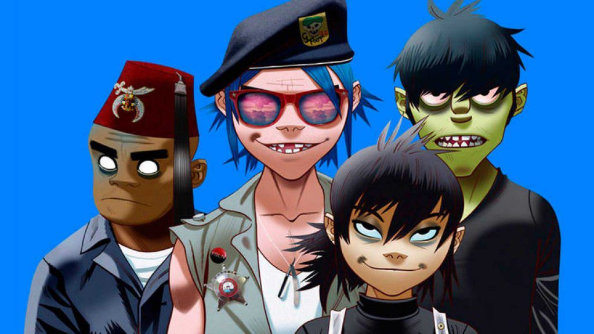
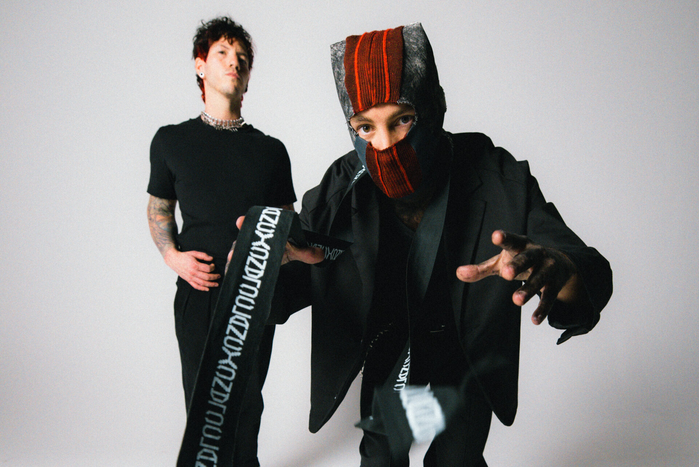

- The Rolling Stones. (rock y rock pop)
- R.E.M. (rock y rock alternativo)
- 30 Seconds to Mars. (rock pop y rock alternativo)
| Nombre | Apellido | Nota |
| Pedro | Fuglini | 10 |
| Aldo | Sanchez | 8 |
| +++++++ | Rock | Rock Alternativo | Pop Rock |
| Bandas | Soda Stereo |
Gorillaz | Twenty one pilot |
| Siu Generis | Red Hot Chili Peppers | Queen | |
| Los Abuelos de la Nada | >Radiohead | The Beatles | |
| Bandas que fusionan los tres generos | |||
|
|||